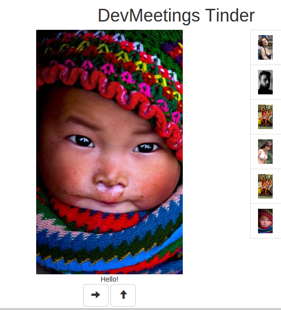

4.1 Add a button which can be used to 'like' a photo.
Photo model should be changed (i.e like field is true) as well as the photo view.
4.2 'like'-ed photos should be added to a separate collection.
You can use Set class or create your own.
If you create your own class try to use Symbol.iterator to enable iterating over the photos.
4.3 Display 'liked' photos.
The main photo view class and a single list photo view class probably will have
similar code. You can use inheritance to optimise it.

4.4 Add a possibility to 'unlike' the photo.
extra
Clicking the icon or a photo inside the 'liked' photos should remove the photo from the list.
4.5 Pressing up arrow key should 'like' the photo.
extra